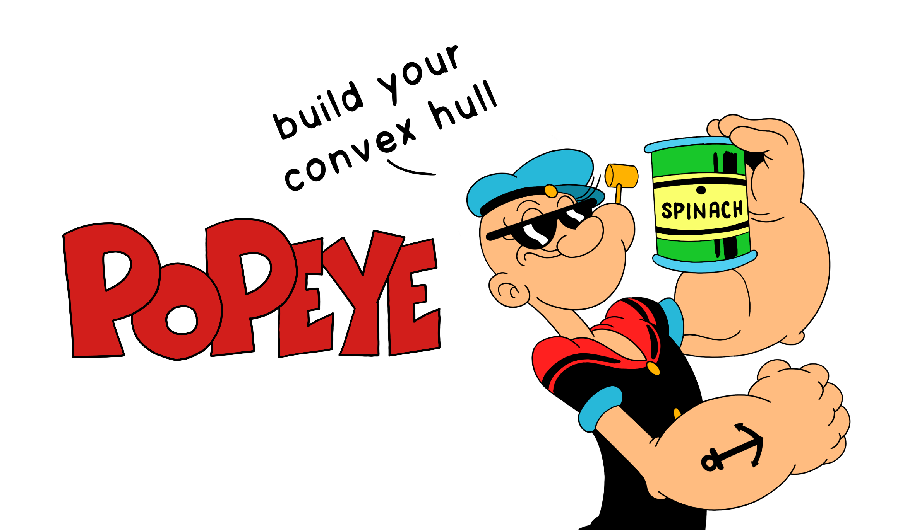
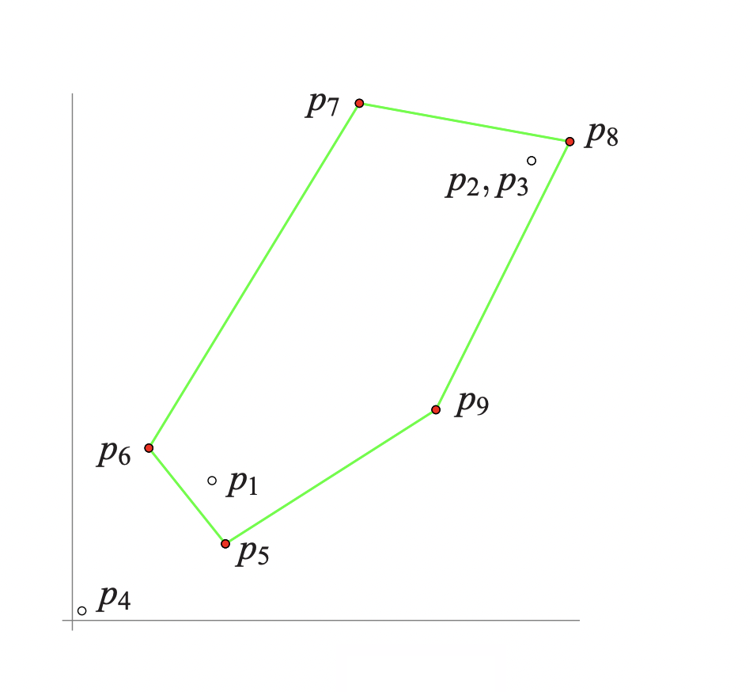
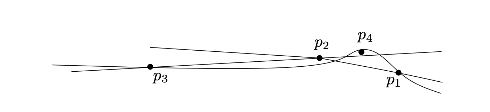

Floating Point Round Off Errors in Geometric Algorithms
·
Code on the Road·
#Algorithms
#C++
#Data Structures 6 min read
6 min read

Eat Spinach and Build your Convex Hull — Popeye the Sailor.
Floating Point Precision in Geometric Algorithms
Most geometric algorithms are designed for exact real arithmetic; replacing them with floating-point arithmetic may cause those implementations to fail. Unfortunately, there are no go-to documents on what can go wrong and why across geometric algorithms. The rest of the post discusses what can go wrong when geometric algorithms are executed with floating-point arithmetic.
To make the explanation simple, consider the convex hull algorithms for a given set of points S, the smallest polygon that can contain all the points of S; the extreme points of S would be the vertices of the convex hull polygon; all the points inside the convex hull are simply discarded.
Typically, convex hulls computed by the floating-point implementation may leave out some of the extreme points, compute non-convex polygons, or the algorithm may run forever.
Incremental Planar Convex Hull Algorithm
An Convex Hull incremental algorithm maintains the current convex hull (CH) of the points seen so far. Initially, a convex hull is formed by choosing three non-collinear points in S. It then considers the remaining points one-by-one. When considering a point r, it first determines whether r is outside the current convex hull polygon. If not, r is discarded. Otherwise, the convex hull is updated by forming the tangents from r to CH. The algorithm maintains the current hull as a circular list L = (v0, v1,. . .,vk−1) of its extreme points in counter-clockwise order, where line segments (vi, vi+1) are the edges of the current hull.
Single-Step Failures
An instance of violating the correctness properties of the algorithm. Consider a sequence: p1, p2, p3, . . . of points such that the first three points form a counter-clockwise triangle, and the insertion of some later point leads to a violation of a correctness property (because of floating-point). The examples that resulted in a violation always involve nearly or truly collinear points; to be clear, sufficiently non-collinear points did not cause any problems. Although this may seem that the examples are unrealistic, it mostly depends on the requirement of tolerable rounding errors as point sets may contain nearly collinear points or truly collinear points, which become nearly collinear by conversion to floating-point representation.
Geometry of Float-Orientation
Three points p = (px, py), q = (qx, qy), and r = (rx, ry) in the plane lie on the same line or form a left or right turn.
The orientation of the triple (p, q, r) is defined by:
orientation(p, q, r) = sign((qx − px)(ry − py)−(qy − py)(rx − px)).
However, for floating-point arithmetic, because of the possible round-off errors, there are three ways in which the result of float_orient could differ from the correct orientation:
- Rounding to zero: Misclassify
+or−as0 - Perturbed zero: Misclassify
0as+or− - Sign inversion: Misclassify
+as−or vice-versa.
float_orient, in other words, triple points are classified as left-turns, right-turns, or collinear.
Failure 1: A point outside the current hull sees no edge of the current convex hull
Consider the set of points:
p1 = (7.3000000000000194, 7.3000000000000167)
p2 = (24.000000000000068, 24.000000000000071)
p3 = (24.00000000000005, 24.000000000000053)
p4 = (0.50000000000001621, 0.5000000000)
p5 = (8, 4)
p6 = (4, 9)
p7 = (15, 27)
p8 = (26, 25)
p9 = (19, 11)
Orientation:
float_orient(p1, p2, p3) > 0
float_orient(p1, p2, p4) > 0
float_orient(p2, p3, p4) > 0
float_orient(p3, p1, p4) > 0 (??)

Figure 1: Computer Convex Hull
The above figure shows the computed convex hull, where a point that is clearly extreme is left out of the convex hull; p1 ≈ (17, 17), p2 ≈ (24, 24) ≈ p3
The first four points lie almost on the line: y = x, and float_orient shows the above results. As indicated by (??), the last evaluation is wrong. Geometrically, these evaluations mean that p4 sees no edge of the triangle (p1, p2, p3). The points p5, . . . , p9 are then correctly identified as extreme points and are added to the hull.
However, the algorithm never recovers from the error made when considering p4 and the result of the computation differs drastically from the correct hull.
Failure 2: A point inside the current hull sees an edge of the current hull
Take a counterclockwise triangle (Initially) and choose the fourth point inside the triangle but very close to one of the edges. There is the chance of sign reversal. For example, consider the set of points:
p1 = (27.643564356435643, −21.881188118811881 )
p2 = (83.366336633663366, 15.544554455445542 )
p3 = ( 4.0, 4.0 )
p4 = (73.415841584158414, 8.8613861386138595)
Orientation:
float orient(p1, p2, p3) > 0
float orient(p1, p2, p4) < 0 (??)
float orient(p2, p3, p4) > 0
float orient(p3, p1, p4) > 0
The convex hull is correctly initialized to (p1, p2, p3). The point p4 is inside the current convex hull, but the algorithm incorrectly believes that p4 can see the edge (p1, p2) and hence changes the hull to (p1, p4, p2, p3), a slightly non-convex polygon.
Failure 3: A point outside the current hull sees all edges of the convex hull
Consider the set of points:
p1 = ( 200.0, 49.200000000000003)
p2 = ( 100.0, 49.600000000000001)
p3 = (−233.33333333333334, 50.93333333333333 )
p4 = ( 166.66666666666669, 49.333333333333336)
Orientation:
float orient(p1, p2, p3) > 0
float orient(p1, p2, p4) < 0
float orient(p2, p3, p4) < 0
float orient(p3, p1, p4) < 0 (??)

Figure 2: Schematic view of Failure 3: The point p4 sees all edges of the triangle (p1, p2, p3)
The first three points form a counterclockwise oriented triangle, and according to float_orient, the algorithm believes that p4 can see all edges of the triangle.
Failure 4: A point outside the current hull sees a non-contiguous set of edges
Consider the set of points:
p1 = (0.50000000000001243, 0.50000000000000189)
p2 = (0.50000000000001243, 0.50000000000000333)
p3 = (24.00000000000005, 24.000000000000053)
p4 = (24.000000000000068, 24.000000000000071)
p5 = (17.300000000000001, 17.300000000000001)
Orientation:
float_orient(p1, p4, p5) < 0 (??)
float_orient(p4, p3, p5) > 0
float_orient(p3, p2, p5) < 0
float_orient(p2, p1, p5) > 0
Inserting the first three points, followed by the fourth point p4 results in the convex quadrilateral (p1, p4, p3, p2), which is correct. The last point, p5, sees only the edge (p3, p2) and none of the other three. However, float_orient makes p5 see also the edge (p1, p4). The subsequences of visible and invisible edges are not contiguous. Since the falsely classified edge (p1, p4) comes first, the algorithm inserts p5 at this edge, removes no other vertex, and returns a polygon that has self-intersections.
The Takeaway
As illustrated above, algorithms can fail because of rounding errors, taking an example of a convex hull algorithm implemented with floating-point arithmetic naively.
As always, the reference to the C++ code, with variants of convex algorithms that fail because of rounding errors and how to prevent it can be found here: https://github.com/addu390/rounding-errors
As an extension, consider trying the CGAL library by using the exact float (MP_Float).
Lastly, the post summarizes [1] and [2]. Which I came across while developing CSCI 6105 lab instructions as a Teaching Assistant.
References:
[1] “Robustness Problems in Convex Hull Computation,” wwwisg.cs.uni-magdeburg.de. http://wwwisg.cs.uni-magdeburg.de/ag/ClassroomExample/#Kettner2008 (accessed Mar. 11, 2022).
[2] L. Kettner, K. Mehlhorn, S. Pion, S. Schirra, and C. Yap, “Classroom examples of robustness problems in geometric computations,” Computational Geometry, vol. 40, no. 1, pp. 61–78, May 2008, doi: 10.1016/j.comgeo.2007.06.003.
[3] “The Floating-Point Guide - Exact Types,” floating-point-gui.de. https://floating-point-gui.de/formats/exact/ (accessed Mar. 11, 2022).

Cite this article as: Adesh Nalpet Adimurthy. (Mar 14, 2022). Floating Point Round Off Errors in Geometric Algorithms. PyBlog. https://www.pyblog.xyz/floating-point-convex-hull
 #index
#index